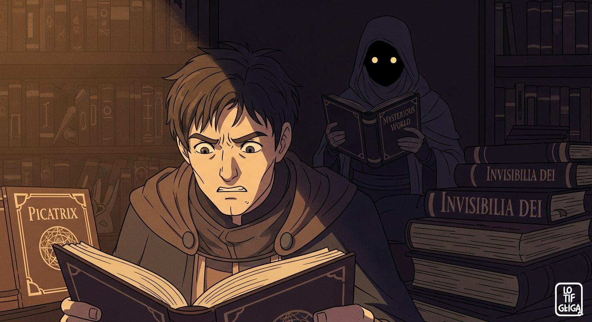
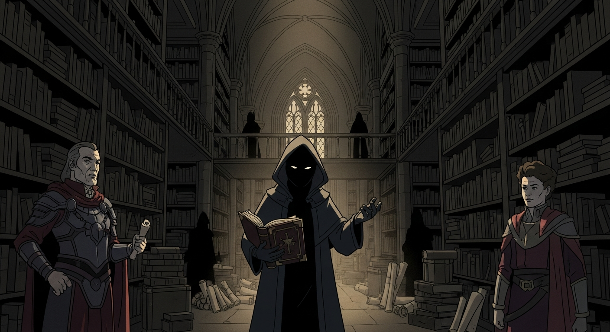

Agrippa wrestles with the *Picatrix*, its arcane symbols blurring with *Invisibilia Dei*'s theological labyrinths. Centuries later, I trace his steps, finding disquieting echoes. A note surfaces: 'The Alchemist's Last Secret' – a *Tincture of Life*? A lost volume, perhaps? Unseen, Alexander F., *Evil Dead* clutched tight, watches—a shared thirst.

Agrippa dreams of Dee, a twisted *Arthur C. Clark* episode. A lab beckons. I find the same lab, guided by *Invisibilia Dei* – more puzzles, moral quicksand. The *Tincture* isn't a potion, folks, but a *node*—dangerous knowledge, corrupting intent. Frivolous Alexander wants it, but, I see the futility. I'll leave it be. The Alchemist’s secret is safe.